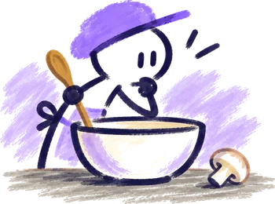

{{ r.name }}
{{ r.when }}À compléter : ses ingrédients seront gardés dans la recette.

Ajoute le premier ingrédient de {{ r.name }}.
- ChampignonsFruits & légumes
- Champignons de ParisFruits & légumes
- Créer l'article « champ »